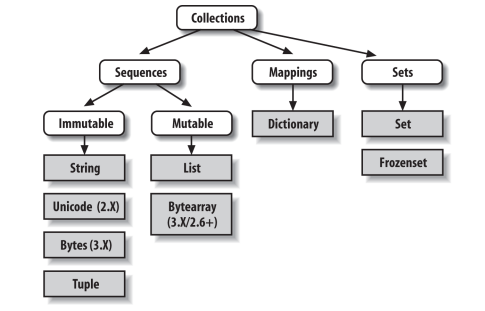
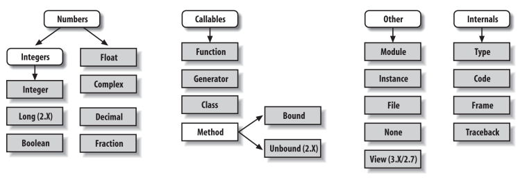
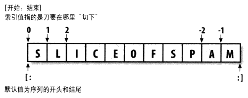
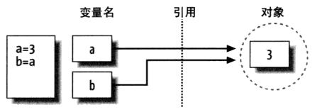
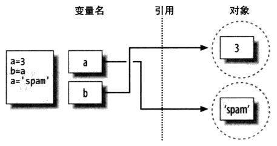

Python
1 语法
# |
注释 |
|---|---|
\ |
折行 |
""" |
文档字符串 |
''' |
|
`` |
获得对象的可打印形式，同 repr() |
1.1 文档字符串
- 文档字符串（DocString）
- 函数（类、模块）的第一行开始的多行字符串。
第一行是简要说明，第二行是空行，第三行开始时详细说明。
def function(): '''Short introduction. Detailed information, continues ... '''
function.__doc__ help(function)
1.2 声明
# -*- coding: utf-8 -*-
2 类型
2.1 概念
2.1.1 动态类型
类型不需要声明，在运行过程中自动决定，表达式的语法决定创建的对象的类型。
- 优点
- 允许嵌套（列表、字典等），可以快速建立复杂的数据结构。
- 可以减少代码的量，同时是多态的基础。
2.1.2 强类型
只能对一个对象进行适合其类型的操作。
- 可用于多种类型的操作（内置函数或表达式的形式）：
len(),var[0]。 - 类型特定的操作（对象方法的形式）：
string.upper()。
2.1.3 不可变性
不可变性，即对象在创建后不可改变，对其进行操作时，会将结果（新的对象）赋给同一个变量名，旧的对象将被清理。
不可变性提供了完整性的约束，在复杂程序中传递对象数据时，可以确保数据不会改变。
| 可变（mutable）类型 | 列表，字典 |
|---|---|
| 不可变（immutable）类型 | 数字，字符串，元组 |
a = 3 a = a + 2 # a 会指向新的对象（值为 5 的整数对象）
2.1.4 自定义类
实际上是定义新的对象类型，用于扩展核心类型。
2.2 类型列表
| 示例 | |
|---|---|
| 数字 | 100 , 99.9 |
| 字符串 | 'string' |
| 列表 | [1, 2, 3] |
| 元组 | (1, 'a', 2, 3) |
| 字典 | {'a':1, 'b':2} |
| 文件 | open('file', 'r') |
| 集合 | set('abc') , {'a', 'b', 'c'} |
| 其他类型 | type , None , True , False |
| 编程单元类型 | 函数、模块、类 |
| 实现相关类型 | 编译的代码堆栈跟踪 |


2.3 类型检验
if type(foo) == type([]): if type(foo) == list: if isinstance(foo, list):
类型检验会破坏代码适用于各种类型的灵活性，代码应当不关注和限制特定的类型，应当编写对象接口（支持不同类型的操作），而不是类型。
2.4 布尔
True False
2.5 数字
| 位数 | |
|---|---|
int |
>= 32 |
long |
无限 |
float |
|
complex |
2.6 序列
序列类型包含 str unicode list tuple bytearray buffer xrange 。
x in s |
检验元素存在 |
|---|---|
x not in s |
|
s + t |
合并 |
s * <n> |
重复 |
<n> * s |
|
s[i] |
索引，返回一个元素 |
s[i:j:k] |
切片，返回子序列 |
s[:] |
复制整个序列 |
s[<l>:<r>:<step>] # <l> 默认为 0 # <r> 默认为 len(s) # <step> 默认为 1，为负时表示倒序步进，如 s[::-1] 表示将字符串倒序

2.7 字符串
s = "foo" # 可使用单引号或双引号 # 连接 s = "foo" + "bar" s = "foo" "bar" # 可省略 + # 重复 s = "foo" * 3 # 索引 c = s[1] s[2] = "x" # TypeError，字符串是不可变类型 # 测试包含字符 if "a" in "foo": if "foo".find("a") != -1:
因为字符串是不可变类型，大量修改会影响性能，可以先将字符串转换为可变类型，修改之后再转换为字符串。
l = list(s) l[x] = ... s = ''.join(l)
2.7.1 转义字符
\' |
单引号 | |
|---|---|---|
\" |
双引号 | |
\\ |
反斜杠 | |
| ASCII 特殊字符 | \r |
Carriage return (CR) |
\n |
Linefeed (LF) | |
\t |
Horizontal tab (TAB) | |
\a |
Bell (BEL) | |
\b |
Backspace (BS) | |
\f |
Formfeed (FF) | |
\v |
Vertical tab (VT) | |
| Unicode 字符 | \N<name> |
字符名称 |
\u<xxxx> |
字符 16 位十六进制值 | |
\U<xxxxxxxx> |
字符 32 位十六进制值 | |
| 进制 | \o<value> |
字符八进制值 |
\h<value> |
字符示例进制值 |
2.7.2 格式
r"" # Raw 字符串，关闭转义机制，用于路径或正则表达式 # r"C:\dir\file.txt" b"" # 字节字符串 # b"sp\x01am" u"" # Unicode 字符串 # u"\u0020spam"
2.7.3 块字符串
三个连续的引号（单或双），可以包围多行字符串。
var = """line1 line2 line3""" print """line1 line2 line3"""
2.8 列表
列表元素通过偏移存取，元素有确定的顺序。列表实际存储的是对其他对象的引用。
l = [1, 2, 3] l = list(range(1, 4)) l = [1, "foo", True, 0.5] # 元素可以是任意类型 l[0] = 4 a = l[-1] # 最后一个元素 # 添加，创建新的列表对象 l = l + [4] # [1, 2, 3, 4] l = l + 4 # TypeError # 添加，原处修改 l.append(3) # [0, 1, 2, 3] l.append([3]) # [0, 1, 2, [3]] l.extend([3]) # [0, 1, 2, 3] l.extend(3) # TypeError # 移除 del l[1] del l[1:2] l[1:2] = [] # 解包，变量个数和元素个数必须相等 a, b, c = l # 等价于 a = l[0] b = l[1] c = l[2]
2.8.1 列表解析
- List comprehension
- 通过对序列的每一项应用一个表达式，以构建一个新的列表。
- 可以替代
for循环，且效率更高。
lst = [<expr> for <elem> in <seq> if <cond>]
doubles = [char * 2 for char in string] squares = [x ** 2 for x in lst]
col = [row[n] for row in lst] col = [row[1] for row in lst if row[1] % 2 == 0]
lst = [' '.join([a, b]) for a in ['1', '2', '3'] for b in ['apple', 'banana']] # ['1 apple', '1 banana', '2 apple', '2 banana', '3 apple', '3 banana']
2.9 字典
字典由哈希表实现，元素没有确定的顺序，实际存储的是对其他对象的引用。键必须是不可变对象，如字符串。。
字典可以取代搜索数据结构。
dct = {'name':'test', 'type':'file', 'size':99} a = dct['name'] dct['type'] = 'link' # 遍历 for key, value in dct.items(): # 测试键值存在 if key in dct: if dct.has_key(key): # 过时 value = dct.get(key, 'default') value = dct[key] if key in dct else 'default' try: value = dct[key] except KeyError: # 字典解析 dct = {x: x*2 for x in range(10)} # 按照确定的顺序读取字典元素，需要把键的列表排序后循环读取 keys = list(dict.keys()) keys.sort() for key in keys: print dict[key]
matrix = {} matrix[(1, 1, 1)] = 1 # {(1, 1, 1): 1}
2.10 列表 vs 字典
- 列表不允许偏移量超过末尾，引用前必须分配足够大的空间。
- 字典以数字（代表偏移量）作为键，不需要预先分配空间。
lst = [] lst[99] = 'value' # IndexError dct = {} dct[99] = 'value' # {99: 'value'}
2.11 元组
元组（tuple）除值和长度不可变外，与列表类似，如可以包含复合对象、偏移量读取、切片。
元组不支持方法调用，只支持操作符 + * 等。
tpl = (1,2,3) tpl = (1,) # 只有一个元素时，需要加 , 以区分元组和括号中的一个对象
tpl = (1,2) tpl[0] = 2 # TypeError tpl.append(1) # AttributeError
元组排序需要先转换为列表，或者使用 sorted() 内置函数。
2.12 集合
- 集合无重复元素，可用于列表去重。
- 集合中的元素没有确定顺序。
2.12.1 语法
foo = {1, 2} # 直接赋值 foo = set() # 初始化 foo = set([1, 2, 1]) # 从列表初始化
2.12.2 运算
& |
交集 |
|---|---|
| |
并集 |
- |
差集 |
2.12.3 示例
unique = list(set([2, 1, 2]))
3 变量
变量名大小写敏感。
3.1 对象
- 变量和对象保存在内存中的不同部分，变量是指向对象内存空间的指针。
- 类型的概念存在于对象中，变量本身没有类型信息和约束，变量可以引用任何类型的对象。
- 变量在表达式中会被它引用的对象代替。
变量初始化，如 a = 3 的实际过程：
- 创建一个值为 3 的
int对象。 - 创建一个变量
a（如果不存在）。 - 将变量与对象连接。
3.2 引用传递
a = 3 b = a

a = 3 b = a a = 'spam'

3.3 原处修改
l1 = [1, 2, 3] l2 = l1 l1[0] = 4 # 此时 l2 = [4, 2, 3]
3.4 变量复制
避免变量相互影响的复制方式。
y = copy.copy(x)
l2 = l1[:]
3.5 相等测试
X = [1, 2, 3] Y = [1, 2, 3] X == Y # True，检查值的相等性 X is Y # False，检查对象的同一性
X = 42 Y = 42 X == Y # True X is Y # True
3.6 垃圾回收
脚本中不需要考虑释放内存空间，当对象的引用数降为零，内存空间就会自动被回收。
sys.getrefcount()
4 运算符
4.1 赋值
a, b = int(input()), int(input())
4.2 数学
/ |
浮点数除法 | 即使操作数都为整数，非整除结果也为浮点数 |
|---|---|---|
// |
整数除法 | Python 2 需要 from __future__ import division |
** |
乘方 |
4.3 比较
== |
两个变量指向的对象的只相等时返回 True |
|---|---|
is |
两个变量指向同一个对象时返回 True |
a = [1, 2, 3] b = a b is a # True b == a # True a = [1, 2, 3] b = a[:] b is a # False b == a # True
4.4 逻辑
| 表达式的值 | ||
|---|---|---|
and |
左值为假 | 左值 |
| 左值为真 | 右值 | |
or |
左值为假 | 右值 |
| 左值为真 | 左值 |
print True and 1 # 1 print True or 1 # True print False and 1 # False print False or 1 # 1 print 1 and True # True print 1 or True # 1 print 1 and False # False print 1 or False # 1 print 0 and False # 0 print 0 or False # False print False and 0 # False print False or 0 # 0 print 0 and 1 # 0 print 0 or 1 # 1 print 1 and 0 # 0 print 1 or 0 # 1 print 1 and 2 # 2 print 1 or 2 # 1 print 2 and 1 # 1 print 2 or 1 # 2
4.5 三元
a = 1 if b == 3 else 2 a = (2, 1)[b == 3]
5 语句
5.1 assert
声明某个表达式为真。表达式非真时，会抛出 AssertionError 。
assert len(lst) >= 1
5.2 break
5.3 continue
5.4 del
- 删除一个变量，或列表中的一部分。
- 引用已删除的变量名会导致错误。
a = [1,2,3,4,5] del a[0] # [2,3,4,5] del a[1:2] # [2,4,5] del a # print(a): NameError
5.5 eval
计算存储在字符串中的 Python 表达式。
eval('2*3')
5.6 exec
执行字符串或文件中的 Python 语句。
exec 'print "Hello world"'
5.7 for
for <var> in <seq>:
# 由 while 实现 i = 0 while i < 100: ... i += 1 # 由 range() 实现 for _ in range(5): ...
5.8 if
if <expr>: ... elif <expr>: ... else: ...
5.9 raise
raise <Exception>() raise <Error>()
5.10 try
try: ... except FooError: ... except: # 捕获所有其他错误 ... finally: # 触发异常之后，程序退出之前，进行收尾操作，如关闭文件 ...
如果错误或异常没有被处理，默认的处理器会被调用，中止运行并打印消息。
5.11 with
用于确保嵌套的代码执行完成后会自动关闭文件，即使发生异常。
with open('output.txt', 'w') as f: f.write('Foo')
6 函数
def <func>(<arg>=<default>, ...):
6.1 参数
def function(*args): # *args 将参数存储在元组中 # **args 将参数存储在字典中 a, b = args # 参数解包，需要确定参数个数 for i in args: # 参数遍历 ...
6.2 返回值
def foo(): return 1, 2, 3 a, b, c = foo()
6.3 lambda
lambda <arg>: <expr>
lambda 语句创建函数对象， : 后的表达式为函数体。
def repeat(n) return lambda s: s*n twice = repeat(2) print twice('x') ## xx
6.4 yield
7 OO
7.1 类
class <Class>(<Parent>, ...):
...
7.2 成员
| 类变量 | <Class>.<var> |
|---|---|
| 对象变量 | self.<var> |
| Public | <name> |
| Protected | _<name> |
| Private | __<name> |
7.3 对象
对象的头部信息：
- 类型标示符
- 引用计数器
7.4 self
self 用于区分类变量和普通变量。
调用类方法 obj.method(arg, ...) 时，Python 会将其转换为 Class.method(obj, arg, ...) ，因此类成员函数必须至少定义一个参数 self 。
子类调用父类的方法需要显式传递 self ： Parent.method(self, ...)
7.5 super()
显式调用基类的函数。
super ( type [, object_or_type ])
class Parent(object): def foo(self): ... class Child(object): def foo(self): super(Child, self).foo()
在多继承时， super() 通过 MRO（Method Resolution Order）和 C3 算法来遍历基类，查找函数。
8 模块
8.1 import
import <module> import <module> as <alias> from <module> import <prop> from <module> import <prop> as <alias>
import 在 sys.path 列出的目录下查找 <module>.py 。第一次加载模块时，模块的 main() 将首先执行。
使用 as 可以用更简短的名称引用模块，同时方便在多个接口相同的可选模块中快速切换，而无需修改代码。
8.2 __name__
if __name__ == '__main__': # 单独运行 else: # 被另一模块加载
9 规范
9.1 PEP 8
- PEP
- Python Enhancement Proposal
| 函数 | my_function() |
|---|---|
10 实现
| CPython | - the most popular Python implementation written in C |
|---|---|
| - source code interpreter | |
| PyPy | - interpreter and just-in-time compiler |
| - compatible with Cpython interpreter |
11 命令行
11.1 python
python <options>
<options>
-c <cmd>
-m <module>
11.2 pydoc
pydoc <name> python -m pydoc <name> # 示例 pydoc raw_input
12 词汇
| unpack | 解包 |
|---|---|